Multimedia plugin

Introducing the Multimedia Plugin for osFinancials5/TurboCASH5
The Multimedia plugin empowers you to seamlessly integrate various file types (e.g., Word, PDF, images, videos, emails) into your Set of Books in osFinancials5/TurboCASH5 data. These multimedia files can be associated with:
- Stock Items: Enrich product information with brochures, images, tutorials, and more.
- Creditors: Store scanned invoices, contracts, and other relevant documents.
- Debtors: Attach credit agreements, photos, and other customer-related files.
- Sales and Purchase Documents: Add supporting files to specific transactions.
- Batch Entries: Add multimedia to journal entries.
- Groups: Add multimedia files based on reporting groups.
How to Add Multimedia: You can add files to the database using various methods:
- To Database: Directly upload the file.
- Link File: Create a link to an existing file.
- Copy File: Create a copy of the file in the database.
- URL: Link to a file on the internet.
- Paste from Clipboard: Paste a copied file directly.
Benefits of the Multimedia Plugin:
- Centralized Storage: Keep all relevant documents in one place.
- Easy Access: Quickly view, edit, and print files as needed.
- Enhanced Record-Keeping: Improve organization and traceability.
- Enriched Information: Provide more context and detail for better decision-making.
By leveraging the Multimedia plugin, you can streamline your workflows, improve data accuracy, and enhance overall business efficiency.
License
The multimedia plug-in is a versatile product. You can link files in divergent forms of osFinancials5/TurboCASH5.
Examples are debtor, creditor, stock items, batches (journals), documents and groups. You can link a image to stock items or debtors but also link signed and scanned documents to debtors.
If you also have the email pro email send will also be linked to the document that was send and the debtor. This makes finding that email to the client with great ease. The outlook link plugin can scan true your outlook in and out box to see if there is email that uses the clients email address. If so it copies the email to the multimedia of that debtor / creditor.
If you have a TWAIN device then you can directly scan from the device to the multimedia.
TWAIN is supported by Web cams, scanners and other image devices.
Other plugins can be used with the Multimedia plugin
Plugins that make use of the multimedia
E-Mail Invoice Pro plugin
The E-mailPro plugin is bundled with the Multimedia plugin only for use with the E-mailPro plugin. To enable and use the Multimedia plugin for all other features, you need to purchase and activate it separately.
If you also have the E-mailPro plugin, it will also be linked to the document that was sent to the debtor (customer / client) / creditor (supplier / vendor). This makes finding that email to the client with great ease. The outlook link plugin can scan through your outlook in and out box to see if there is e-mail that uses the clients e-mail address. If so it copies the e-mail to the multimedia of that debtor (customer / client) / creditor (supplier / vendor).
Reminders / Remittance plugin
The Reminders plugin is bundled with the Multimedia plugin only for use with the Reminders plugin. To enable and use the Multimedia plugin for all other features, you need to purchase and activate it separately.
More Plugins that make use of the multimedia
- E-commerce: Add product images, specifications, and user manuals to online listings.
- Outlook sync: Synchronize emails from Outlook with osFinancials5/TurboCASH5 records and attach them to the Multimedia plugin.
- CRM: Customer Relationship Management: Add files, such as, customer-related documents, such as contracts, proposals, and correspondence.
Note: The E-mail Invoice Pro and Remittance plugins are bundled with the Multimedia plugin for specific functionalities.
To enable and use the Multimedia plugin for its full range of features, you may need to purchase and activate it separately. To find the perfect plugin combination for your specific needs, please visit our webshop.
Activate the Multimedia plugin
The Multimedia plugin needs to be activated in each Set of Books.
To activate the multimedia plugin:
- On the Setup ribbon, select Plugins → Generic → Multimedia. If this plugin is not listed under Plugins → Generic, activate it via Tools → Activate plugins (Setup ribbon).
- The Multimedia - General tab screen is displayed:
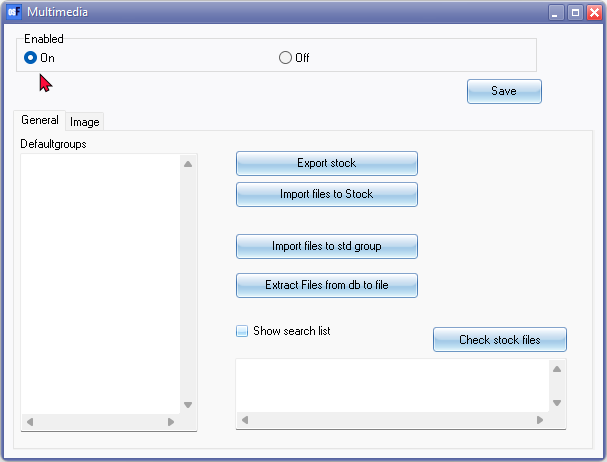
- Click On option to enable it.
- The General options is as follows:
- Defaultgroups – Links the input to default extensions to group types. Add default groups for file types. Enter a line like this .jpg=testgroup 1 and on the next line .bmp=testgroup 2”.
|
|
If you double-click in the Defaultgroups box it will be populated with the following: .jpg=products_image All files with the extension .jpg will be placed in the first group of the list (products_image for default stock images) the line 'STOCKGROUPNEXT.JPG' makes sure the next unique value will be automatic selected from the list of groups. You add groups by simply typing in your group name. |

- Export stock – This button will launch the “Save As” screen. With the function export files to stock you can add images quickly with a file that contains a stock code and a full image path.
- Import files to Stock – This button will launch the “Open” screen. This file must be a "tab delimited" file format. You may import files.
- Import files to std group – This button will launch the “Open” screen. You may import files.
- Extract Files from db to file - This button extracts the files from the active Set of Books to the database and creates a file .creates a file.
- Show search list – By default this option is not selected. Select this option to add the Multimedia icon to the Default ribbon. This will allow you to filter and search for multimedia files.
- Click on the Image tab.
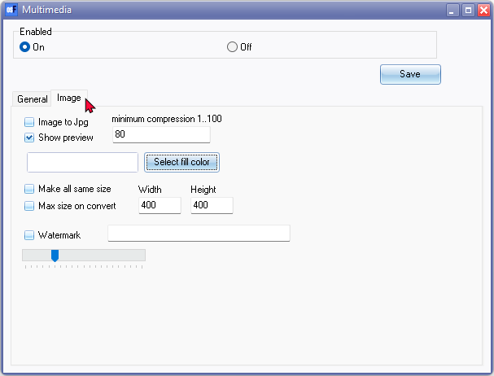
- The options is as follows:
- Image to Jpg – Tick this option to convert a “GIF / PNG / BMP / WMF / EMF” image to the Jpg file format. You may specify the minimum compression ratio from 1 … 100.
|
|
Before selecting the Image to Jpg conversion, it is recommended that you have a copy your images somewhere on your system. If it happens, that the conversion and compression does not work properly, you are covered. |

- Show preview – Tick this option if you have an image file.
- Select fill color – The default color is “White”. This button launches the “Color” screen, on which you may pick from the standard colors or define your own custom colors. This will allow you to convert images to the same size filling up the spaces with a predefined color. It also allows you to see an example adjust and then preview the result until you are satisfied.
- Make all same size – Tick this option, if you wish to convert all images to the same size.
- Max size on convert – You may tick this option to convert all images to a specific size. The default size is 400 x 400. You may enter your preferred size.
- Watermark – If you wish to add a watermark to your images, you may enter text. You may also specify the shading of the watermark from light to dark.
- Click on the Save button. This will add the “Multimedia” tab to the following screens (i.e. Stock items (Products), Creditors (suppliers/vendors) and Debtors (customers/clients)). On the screens for Document grid (i.e. Invoices, Credit notes, Quotes, Purchases, Supplier returns and Orders) you have the option to add and manage multimedia files. The Multimedia icon will be added to the Documents form which you can add and manage and edit the multimedia files in unposted documents.
Managing Multimedia Files
If you have ticked the "Show search list" tick box in the Plugins → Generic → Multimedia ( Setup ribbon). the Multimedia icon will be added to the Default ribbon. This will allow you to filter and search for multimedia files.
The "Show search list" field is by default not selected, or if you deselect the "Show search list" field at the later stage the Multimedia icon will be removed from the Default ribbon. Whatever option you have selected in the "Show search list" field, you may access the Multimedia plugin from the following options:
- Multimedia tab on the following screens:
- Creditors (suppliers/vendors).
- Debtors (customers/clients).
- Stock items (Inventory items/products).
- Multimedia icon from which you may manage and edit the multimedia files on the following screens for Documents:
- Debtor (customer/client) documents (i.e. Invoices, Credit notes, Quotes).
- Creditor (supplier/vendor) documents (i.e. Purchases, Supplier returns and Orders).
- Multimedia in Batches (Journals) - Context menu on Batch entry screens.
- Multimedia in Groups - Context menu on Reporting group 1 or Reporting group 2 for all available reporting groups.
Multimedia Basics
In this example, the Multimedia tab for Stock items is used to illustrate the options for working with Multimedia files. The basics are similar to those Multimedia tabs and screens launched from other forms.
Adding Multimedia files
Go to the Multimedia tab of your stock item, debtors, creditors, documents.
The default view is the “List” view.
In this example, Multimedia plugin for Stock items is shown. Similar features is available for debtors, creditors, documents, etc.
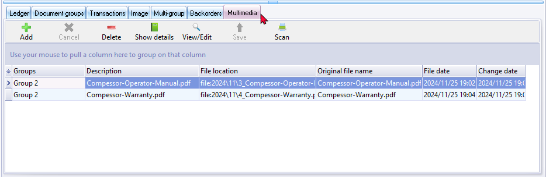
|
|
You may click on the column headings (i.e. Groups, Description, File location and original file name to change the sequence of the multimedia files on the list. |

To add a multimedia file, click on the Add icon.
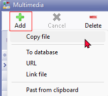
This will list five options in which you can add Multimedia files in your Set of Books:
- Copy file file - These files are stored in the files folder in sub folders for the year and month. You want to ensure that the file is always available, even without an internet connection.
- To database - This option embeds the file directly into the Set of Books database for seamless integration with other data. The file is stored in the database of the Set of Books.
- URL - This option to provide the direct link to the file. Only the Hyperlink or other URL link is stored. This option will reference a file hosted on a website or cloud storage service. This saves storage space and allows for easy access from different devices. This option requires an internet connection to access the file. You may experience potential for broken links, if the file is moved or deleted online, the link becomes invalid.
- Link file - Use this option to reference the file's location. The full path where the selected file is stored on your system.
- Paste from clipboard - The file name of the file pasted from your systems clipboard. The file is copied from your clipboard and pasted directly into your Set of Books.
Select one of the above options. The “Open” screen will be displayed for the “To database”, “Link file”, “Copy file”, “URL” and “Paste from clipboard” options. Select a valid file format and click on the Open button. The file will be added to the list. You may then enter or edit the Groups and Descriptions on the list, as necessary.
|
|
If you select the Add – URL option, the Show details option will be displayed. You then need to enter the Groups, Description, File Location (i.e. ftp or web address of the file) and the original name of the file. |
View/Edit Multimedia files
To view or edit the details, click on the Show details button.
- Cancel icon - The Cancel icon is by default inactive. If this icon is activated during a process, you may abort the process.
- Delete icon - Select a file and click on the Delete icon. The file will be removed from the list.
|
|
Make absolutely sure that the correct entry is selected. This delete cannot be undone. |
- Show details icon - To view or edit the details of a selected item on the list, click on the Show details button.
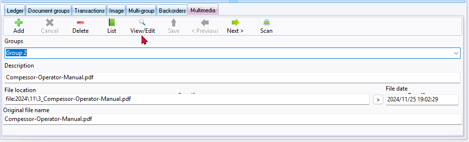
- Groups – Select a group from the list, if necessary. You may also enter (type) a group name, if not on the list. Once this is done, you need to click on the Save icon. The newly entered group, will only be added to the list, once you click on the Save button of the form.
- Description – You may change it if necessary.
- File location – If the “File location” displays the file name preceded by type e.g. link for a linked file; and file for a copied file, you may click on the > (“Open folder”) button to open the file location folder for the selected file.
- Original file name - The name of the original file as added to the multimedia plugin.
- File date – Your operating system's date and time will automatically be added for the “To database”, “Link file”, “Copy file”, “URL” and “Paste from clipboard” options.
- View/Edit icon - Click on the View/Edit button to open a file and view it in the default program associated with the file type on your operating system.
- You may print and/or edit the file.
- Once you have viewed and or edited the file; and the file is closed, a confirmation message, will be displayed.
“Press OK when you are done editing the file to save it to the database!”
- Click on the OK button to save the file to the database.
- Click on the Save button.
- Navigation
- < Previous icon - Click to navigate to the previous record.
- Next icon > - Click to navigate to the next record.
- Save icon - Once you have changed (edited) any of the available fields, this Save button will be activated. Click to save your changes.
|
|
You still need to click the Save button of the form, e.g. Stock items, Debtor / Creditor, etc. If you do not save the form, your added files, or any changes may be lost. |
- Scan icon - If you have a TWAIN device configured and setup on your system, then you can directly scan from the device to the Multimedia plugin. TWAIN is Technology for an Accessible Imaging Interchange Standard. It's a standard protocol for image scanning and transfer between applications.
TWAIN is supported by Web cams, scanners and other image devices. ("Technology Without An Interesting Name" humorous).
The “Select Source” screen will be displayed on which you may select a device.
Multimedia Search List
The Multimedia search list is by default this option is not selected. To add the Multimedia icon to the Default ribbon, you need to select (tick) the “Show search list” option on the General tab when activating the Multimedia plugin (Plugins → Generic → Multimedia on the Setup ribbon). This will allow you to filter and search for multimedia files.
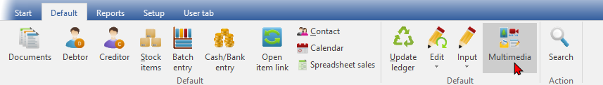
On the Default ribbon, select Multimedia.
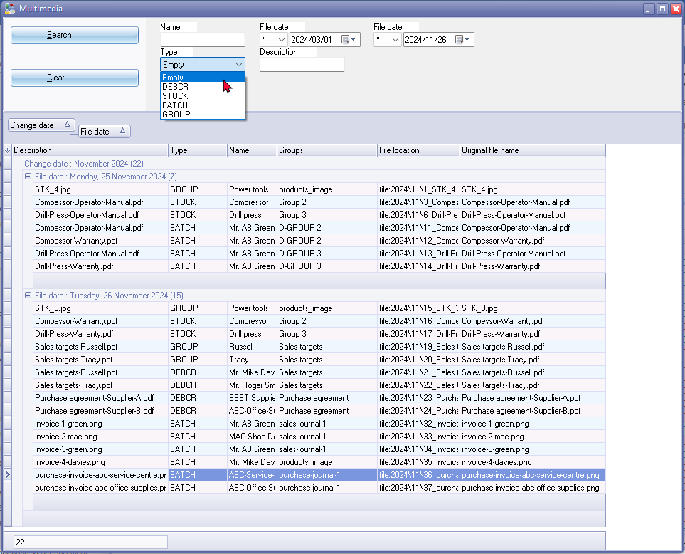
Multimedia Search – Types
The “Types” of Multimedia files are grouped in four (4) basic types:
- DEBCR – Multimedia files added on the Multimedia tab of Debtor / Creditor accounts.
- STOCK – Multimedia files added on the Multimedia tab of Stock items.
- BATCH – Multimedia files added to Batch entry and Document entry screens. The multimedia files added in Batch entry and Document entry screens will only be updated (added) to the Search list, once Batches and Documents are posted (updated) to the ledger.
- GROUP – Multimedia files added for Reporting groups 1 and/or Reporting groups 2 in Setup → Groups (Setup ribbon)).
Multimedia – Groups
In addition to the "Link image" option on the Reporting groups (for example Stock group1 or Stock group2) you may add files (“To database”, “Link file” and “Copy file” or “URL” options), using the Multimedia plugin for your Reporting groups.
To add Multimedia files to Reporting groups:
- On the Setup ribbon; select Setup → Groups.
- Select the Reporting group.
- Select the group in the list of groups.
- Right-click and select “Multimedia” from the context menu.
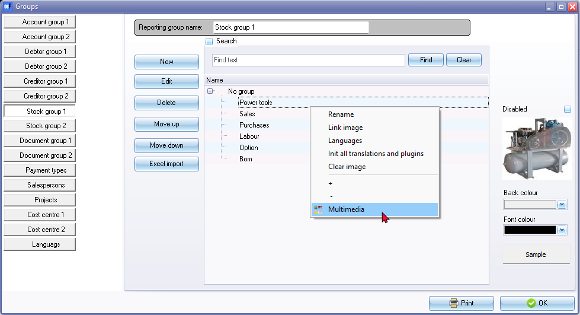
- The “List view” of the “Multimedia” screen will be displayed.
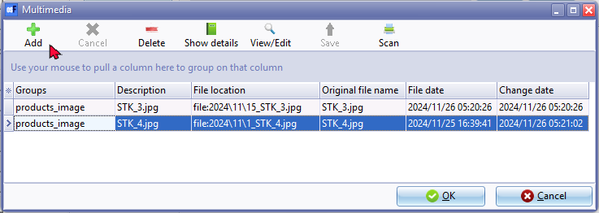
- Click on the Add button and select the “To database”, “Link file”, “Copy file”, “URL” and “Paste from clipboard” options.
- Click on the OK button to save the multimedia files to the selected group.
GROUP - Multimedia search list
If you have added multimedia files for your reporting groups, such as Stock groups, Salespersons), it will be available under GROUP type on the “Multimedia search list” (Multimedia icon on Default ribbon).
Add and Manage Multimedia files for Debtors (customers/clients)
In addition to the "Link image" option on the Reporting groups (for example Debtor group1 or Debtor group2) you may add files (“To database”, “Link file”, “Copy file”, “URL” and “Paste from clipboard” options), using the Multimedia plugin for your Reporting groups.
Some examples of multimedia files for debtors
Some types of documents that could be added to the multimedia plugin for debtors (customers/clients):
Customer Information:
- Customer Profiles: Detailed information about each customer, including contact information, purchase history, and preferences.
- Customer Agreements: Contracts or agreements outlining the terms and conditions of business relationships with customers.
- Sales targets: You can empower your sales teams to achieve their goals, improve performance, and drive revenue growth.
Sales and Invoicing Documents:
- Invoices: Detailed invoices for products or services sold to customers.
- Sales Orders: Documents confirming the purchase of products or services by customers.
- Credit Notes: Documents issued to customers for refunds or credits.
Marketing Materials:
- Customer Newsletters: Regular newsletters with company news, product updates, and promotional offers.
- Marketing Brochures: Marketing materials promoting products or services to customers.
Other Relevant Documents:
- Delivery Notes: Documents confirming the delivery of products to customers.
- Return Authorizations: Authorizations for customers to return products.
By including these types of documents, businesses can improve customer service, streamline operations, and enhance the overall customer experience.
Add Multimedia files for Debtors (customers/clients)
The Multimedia plugin will add a Multimedia tab to all Debtor (customer / client) accounts.
To add multimedia files to debtors (customers):
- On the Default ribbon, select Debtors.
- Select a specific Debtor (customer / client) account and click Edit button. Alternatively, you may double-click on the account.
- Click on the Multimedia tab. The “List view” of the “Multimedia” screen will be displayed.
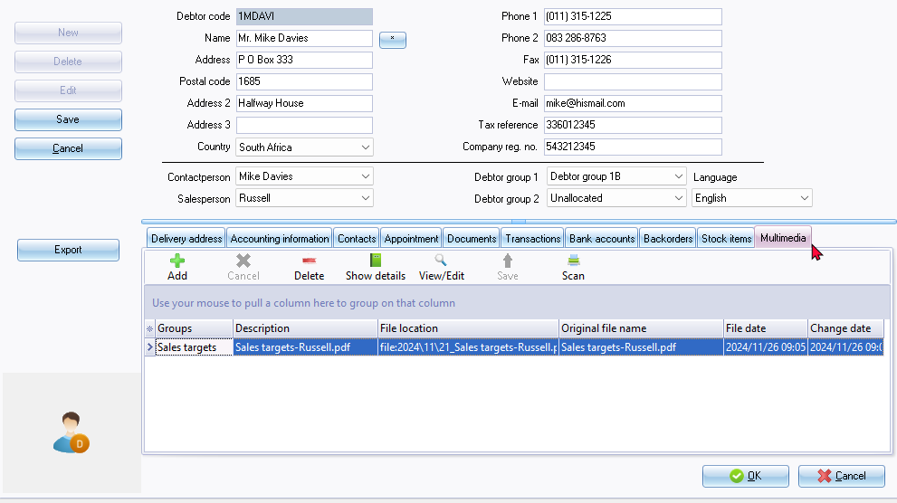
- Click on the Add button and select the “To database”, “Link file”, “Copy file”, “URL” and “Paste from clipboard” options.
DEBCR - Multimedia search list
If you have added multimedia files for debtors (customers/clients), it will be available under DEBCR type on the “Multimedia search list” (Multimedia icon on Default ribbon).
Add and Manage Multimedia files for Creditors (suppliers/vendors)
In addition to the "Link image" option on the Reporting groups (for example Creditor group1 or Creditor group2) you may add files (“To database”, “Link file”, “Copy file”, “URL” and “Paste from clipboard” options), using the Multimedia plugin for your Reporting groups.
The Multimedia plugin will add a Multimedia tab to all Creditor (supplier / vendor) accounts.
Some examples of multimedia files for creditors
Here are some types of documents that could be added to the multimedia plugin for creditors (suppliers/vendors):
Supplier Information:
- Supplier Profiles: Detailed information about each supplier, including contact information, product offerings, and performance metrics.
- Supplier Agreements: Contracts or agreements outlining the terms and conditions of business relationships with suppliers.
Purchasing and Invoicing Documents:
- Purchase Orders: Documents confirming the purchase of products or services from suppliers.
- Supplier Invoices: Invoices received from suppliers for products or services purchased.
- Credit Notes: Documents issued to suppliers for refunds or credits.
Payment and Reconciliation Documents:
- Payment Remittance Advice: Documents confirming the payment of supplier invoices.
- Bank Statements: Bank statements showing payments made to suppliers.
- Supplier Reconciliations: Documents reconciling supplier accounts and identifying any discrepancies.
Other Relevant Documents:
- Delivery Notes: Documents confirming the delivery of products from suppliers.
- Quality Control Reports: Reports on the quality of products or services received from suppliers.
By including these types of documents, businesses can improve supplier relationships, streamline procurement processes, and optimize cash flow.
Add Multimedia files for Creditors (suppliers/vendors)
To add multimedia files to creditors (suppliers/vendors):
- On the Default ribbon, select Creditors.
- Select a specific Creditor (supplier / vendor) account and click Edit button. Alternatively, you may double-click on the account.
- Click on the Multimedia tab. The “List view” of the “Multimedia” screen will be displayed.
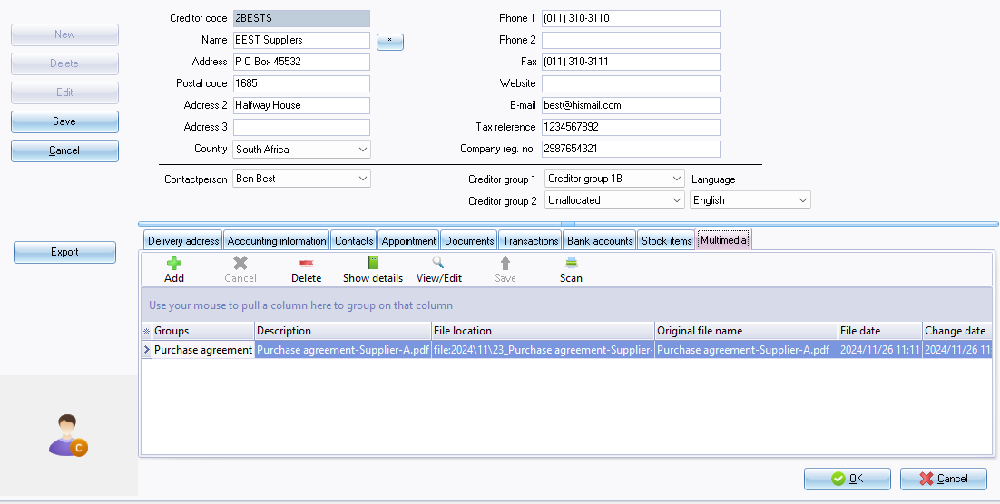
- Click on the Add button and select the “To database”, “Link file”, “Copy file”, “URL” and “Paste from clipboard” options.
DEBCR - Multimedia search list
If you have added multimedia files for creditors (suppliers/vendors), it will be available under DEBCR type on the “Multimedia search list” (Multimedia icon on Default ribbon).
Multimedia – Stock items (Inventory items/Products)
The Multimedia plugin supports various file formats such as documents, images, videos and more.
Some examples of multimedia files for stock items (Inventory items/Products)
Some types of documents that could be added to the multimedia plugin for stock items/inventory items/products:
Product Information:
- Product Specifications: Detailed information about the product's features, dimensions, materials, etc.
- Product Datasheets: Comprehensive technical information, including performance data, maintenance instructions, and troubleshooting guides.
- Product Catalogs: Digital catalogs showcasing a range of products, including images, descriptions, and pricing information.
Guarantees and Warranties:
- Warranty Certificates: Official documents outlining the terms and conditions of the warranty, including coverage, duration, and claims procedures.
- Guarantee Letters: Letters from the manufacturer or supplier assuring the quality and performance of the product.
Operator's Manuals:
- User Manuals: Step-by-step instructions on how to use and operate the product.
- Installation Guides: Detailed instructions for assembling and installing the product.
- Maintenance Manuals: Guidelines for regular maintenance and troubleshooting.
Safety Data Sheets (SDS):
- SDS Documents: Information on the potential hazards associated with the product, including safety precautions, handling instructions, and first aid measures.
Marketing Materials:
- Product Brochures: Marketing materials promoting the product, including key features, benefits, and pricing information.
- Product Videos: Demonstrations, tutorials, or unboxing videos to showcase the product's features and benefits.
By including these types of documents, businesses can provide customers with comprehensive information about their products, enhancing their understanding and confidence in making purchasing decisions.
Add Multimedia – Stock items (Inventory items/Products)
To add multimedia files to stock items (products):
- On the Default ribbon, select Stock items.
- Select the stock item (inventory item/product).
- Click on the Multimedia tab. The “List view” of the “Multimedia” will be displayed.
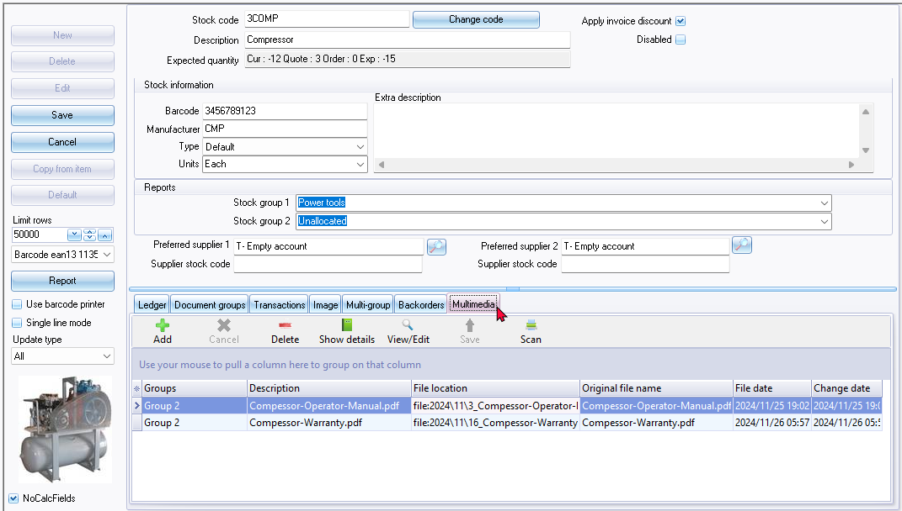
- Click on the Add button and select the “To database”, “Link file”, “Copy file”, “URL” and “Paste from clipboard” options.
View/Edit - Multimedia – Stock items (Inventory items/Products)
Once your multimedia files have been added, you may view these multimedia files.
To view and edit the Multimedia files:
Select a stock item (inventory item/product) on the list and click on the Edit button. Alternatively, you may double-click on a selected stock item (inventory item/product).
All the multimedia files will be listed for a selected stock item (product).
Click on the View/Edit button. On the Multimedia screen you may use the filter and grouping options, to locate a specific item.
To view a specific multimedia file, you may click on the View/Edit button. The file will be opened in your system's default application program associated with the file type extension (for example *.pdf).
Multimedia – Transactions
Multimedia – Documents
The multimedia files added in Document forms will only be updated (added) to the Multimedia search list, if the Documents are not yet updated (unposted) to the ledger.
Added multimedia files will only be available in the Multimedia search list if the Documents are updated (posted) to the ledger.
Added multimedia files will not be saved in posted documents.
This plugin may be used to manage multimedia files on the following documents:
- Sales documents (i.e. Invoices, Credit notes and Quotes).
- Purchase documents (i.e. Purchases, Supplier returns and Orders).
Multimedia – Unposted Documents
To add Multimedia files on Documents:
- On the Default ribbon, select Documents. The “Document entry” listing “Invoices” will be displayed. If necessary, select the document type you wish to process.
- To edit a selected document click Edit / or New to create a new document.
- Click on the Multimedia icon. The “List view” of the “Multimedia” screen will be displayed.
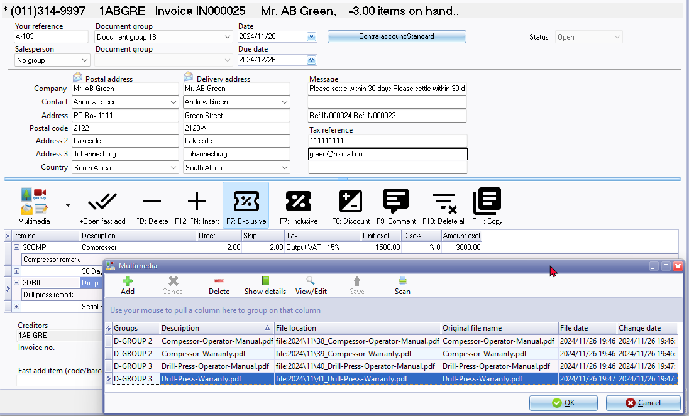
- Click on the Add button and select the “To database”, “Link file” and “Copy file” or “URL” options..
|
|
If you need to add multimedia files for more than one stock item (product), you need them all on the document. |
- Click OK on “Multimedia screen.
- Click OK on the Document form.
BATCH - Multimedia search list
If you have added multimedia files in unposted documents, it will only be available under BATCH type on the “Multimedia search list” (Multimedia icon on Default ribbon) once the document(s) have been updated (posted) to the ledger.
To view the Multimedia files added to stock item:
Select the stock item (product) and click on the Multimedia icon. The Multimedia list view screen will list the multimedia files for the stock item (inventory item/product).
Multimedia - Posted documents
Multimedia files attached to a posted document, may be viewed.
To do this;
- Select a posted document and double click.
- Click on the Multimedia icon. The “List view” of the “Multimedia” screen will be displayed.
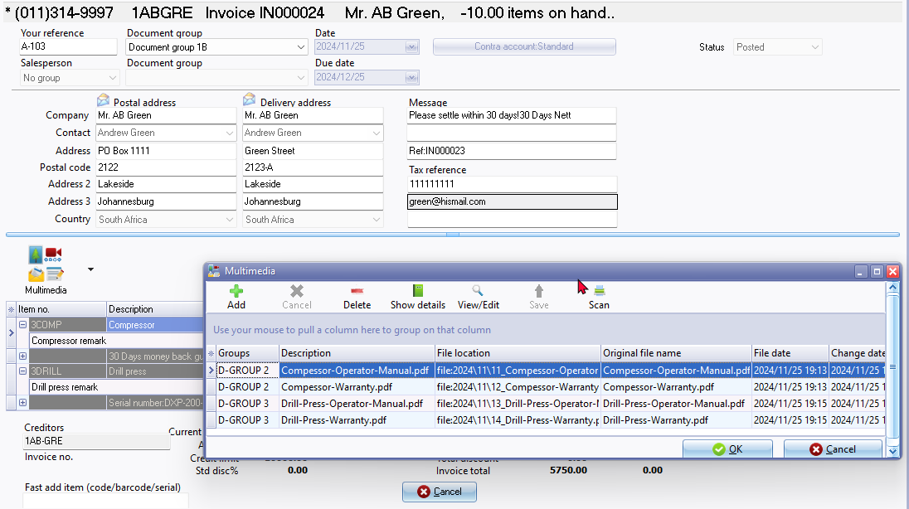
- Show details this will display the details for the multimedia file. If you click on the > Open folder button (on the right side of the If the “File location” displays the file name preceded by type e.g. link for a linked file; and file for a copied file, you may click on the > (“Open folder”) button to open the file location folder for the selected file.
- Click on the View/Edit button to open a file and view it in the default program associated with the file type on your operating system.
- You may print and/or view the file.
- Click on the OK button to close the Multimedia screen.
- Click on the Cancel button of the Document form.
|
|
If you add a multimedia file or delete the multimedia file on a Posted document, your changes will not be saved. The reason for this, is that you cannot edit a posted document. |
Copy documents
If you copy a selected document, the Multimedia files will not be copied. You need to decide whether to include these multimedia files, or select other multimedia files, if required.
Cancel / Reverse posted documents
Multimedia files will be removed when you cancel or reverse a sales document (Invoices and Credit notes) or a purchase document (Purchases or Supplier returns)), in the Global processes → Reverse posted batch/document menu on the Setup ribbon. Once a document is reversed you may access the document as an unposted document in Documents on the Default ribbon.
On the Document form, you may edit the document. When editing the document, you may add the Multimedia files for the stock items/inventory items/products), as necessary.
Multimedia – Batches
If the multimedia files added to transactions in Batch entry screens, it will only be updated (added) to the “Multimedia search list”, once the batches are posted (updated) to the ledger.
Unposted journals (batches) will not be available in the Multimedia Search feature.
Add Multimedia files to a Batch (Journal)
To add Multimedia files to Batch transactions:
- Select the batch type. Once you have entered a transaction, you may add Multimedia files.
- On a selected transaction in the Batch entry screen, right-click on a transaction.
- On the context menu, select the “Plugin action → Multimedia” option.
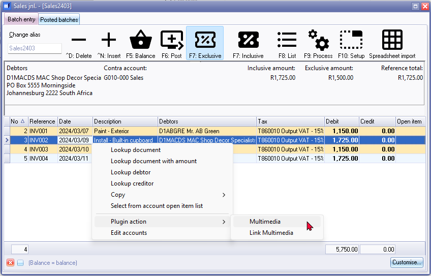
- The “List view” of the “Multimedia” screen will be displayed.
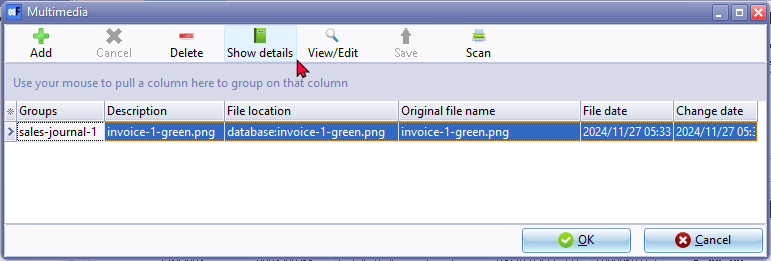
- On the Multimedia screen, click on the Add button and select the “To database”, “Link file”, “Copy file”, “URL” and “Paste from clipboard” options.
- Click OK on the multimedia screen.
To view the Multimedia files added to transactions in an unposted batch
Select the transaction and double-click on it. The Multimedia list view screen will list the multimedia files for the transaction.
Show details button. This will show the detail such as the Group, Description, File location, original file name and File date.
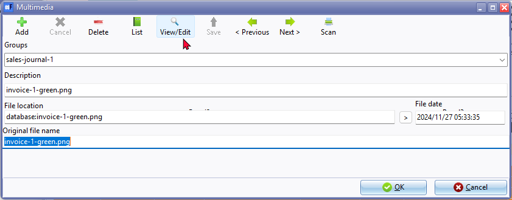
View/List button - This will launch the selected multimedia file in your system's default application or program associated with the file type.
BATCH - Multimedia Search Type
If you have added multimedia files in unposted batches (journals), it will only be available under BATCH type on the “Multimedia search list” (Multimedia icon on Default ribbon) once the batches (journals) have been updated (posted) to the ledger.
Cancel / Reverse posted batches (journals)
Multimedia files will be removed when you cancel or reverse a posted batch (journal). in the Global processes → Reverse posted batch/document menu on the Setup ribbon. Once a batch (journal) is reversed you may access the batch (journal) as an unposted batch (journal) in Batch entry on the Default ribbon.
On the Batch entry form, you may edit the batch (journal). When editing the batch (journal), you may add the Multimedia files for the transactions, as necessary.
Multimedia - Calendar (Planner)
Currently the Multimedia is not supported in the Calendar (Default ribbon). Once you have created documents from the Calendar, these documents will be generated as an unposted document. You may add Multimedia files for your stock items (inventory items/products) in these unposted documents
Multimedia – Projects
If you have activated Projects (on Setup → System parameters (Setup ribbon)), and created Projects on the Input → Projects menu, the Multimedia plugin will add a tab to the Projects.
Search Multimedia files
To add the Multimedia icon to the Default ribbon, you need to select (tick) the “Show search list” option on the General tab when activating the Multimedia plugin (Plugins → Generic → Multimedia on the Setup ribbon).
Multimedia Search - Types
You may search an filter Multimedia files in the STOCK, DEBTORS, CREDITORS, BATCH and GROUP categories on the “Multimedia search list” (Multimedia icon on Default ribbon).
Added Multimedia files can be searched, filtered and sorted by "Type" to manage your multimedia files in the following categories:
- STOCK - Multimedia files added in the Multimedia tab of Stock items (Default ribbon).
- DEBCR - Multimedia files added in the Multimedia tab of each debtor (customer/client) account in the Debtors / Creditors (Default ribbon).
- Debtors (Default ribbon) - Multimedia files added in the Multimedia tab of each debtor (customer/client) account.
- Creditors (Default ribbon) - Multimedia files added in the Multimedia tab of each creditor (supplier/vendor) account.
- BATCH - Multimedia files added in the following options:
- Batches (Journals) (Default ribbon) - You may add multimedia files for the transactions, according to your specific needs. Only the batch (journal) transactions linked to multimedia files will be listed, if the batch (journal) is posted (updated) to the ledger.
- Documents - You may add multimedia files for the Stock items (Inventory items/Products) according to your specific needs. All document types for sales documents (Quotes, Invoices and Credit notes) and purchase documents (Orders, Purchases and Supplier returns) and support multimedia files. Only the documents linked to multimedia files will be listed, if the document is posted (updated) to the ledger.
- GROUPS - Multimedia files added in the Setup → Groups menu (Setup ribbon) for your reporting groups.
Multimedia Search – Filter options
In addition to the standard filters (“Type” and “File date”) you may enter a name or a description to search for.
You may drag a column next to the Change date and File date to group the multimedia files for the selected column.
You may also build custom filters (adjusted filters).
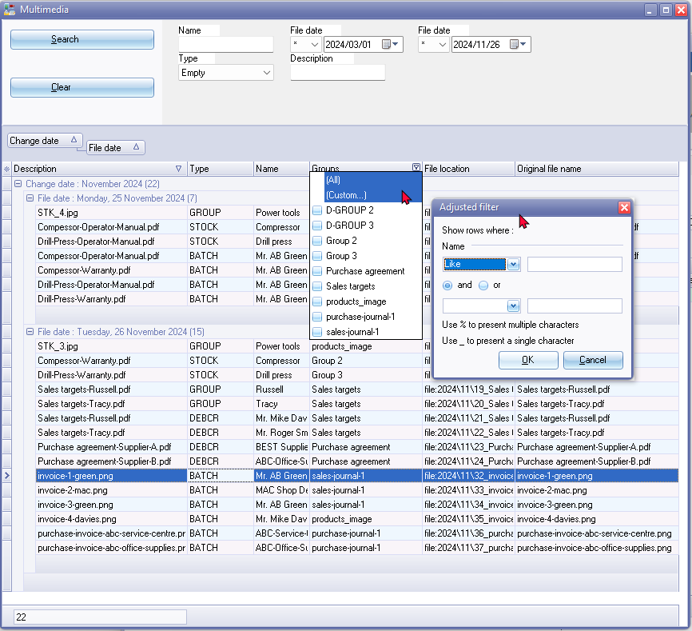
Multimedia Search – View files
To view and edit the Multimedia files:
Select an item on the list and double-click on it. The Multimedia screen, listing all the available files of your selection, will be launched.
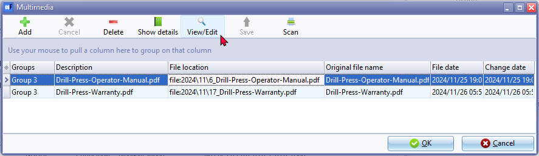
On the Multimedia screen you may use the filter and grouping options, to locate a specific item.
To view a specific multimedia file, you may click on the View/Edit button. The file will be opened in your system's default application program associated with the file extension (for example *.pdf,).
Multimedia Files Storage
Multimedia files are stored in the files folder within the Set of Books directory, for example:
E:\osfinancials5\books\MY-BOOKS\files\2024\11
Within the files folder, the Multimedia files are stored in the Year/Month folders. In this example, the files are included in the Year '2024' and the month '11' which is November.
Each file will be prefixed with a numeric number for example, '1_Filename' and file type extension.
Multimedia files added with the following options is not stored in this folder:
- To Database -The file is embedded and sored in the database of the Set of Books.
- Link file - The file is linked to location, elswere on your system or network.
- URL - The path or webaddress is set to a link on the internet where the files are stored.
Understanding the Multimedia File Storage Structure
Key Points:
- Year and Month Organization: Files are categorized by year and month for easy retrieval.
- Numeric Prefix: This ensures files are sorted in a specific order, which can be useful for various purposes (e.g., chronological order, importance).
- File Extension: The file extension indicates the file type, allowing for proper handling and display.
Potential Use Cases:
- Document Management: Storing and organizing various document types like PDFs, Word documents, and presentations.
- Image and Video Storage: Centralizing images and videos for easy access and reference.
- Backup and Recovery: Implementing a backup strategy to safeguard important multimedia files.
By understanding this structure, you can effectively manage and access your multimedia files within the specified directory.